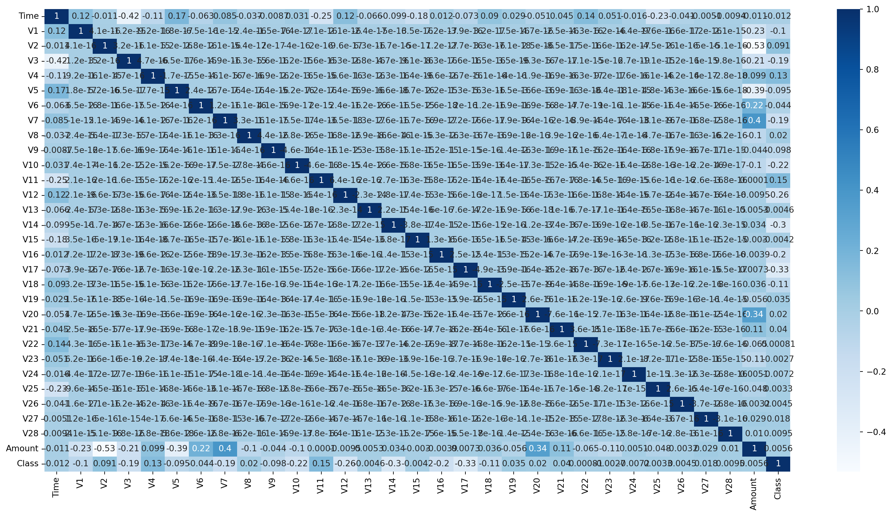
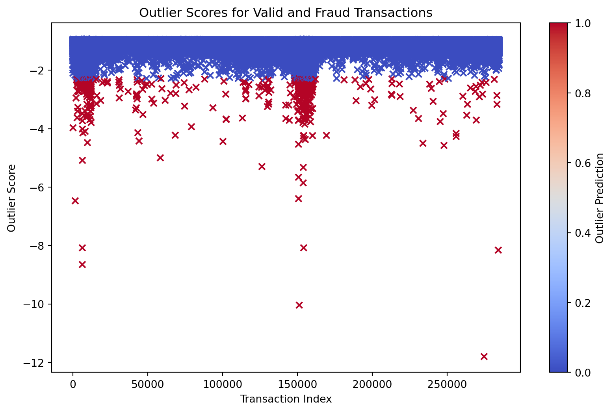

A classic example to demostrate anamoly and oultier detection is detection of credit card fraud. In the era of digital transactions, credit card fraud has become a prevalent issue. To tackle this problem, machine learning techniques can be employed for anomaly detection.
The Dataset
The datasets contains transactions made by credit cards in September 2013 by european cardholders. This dataset presents transactions that occurred in two days, where we have 492 frauds out of 284,807 transactions.
import numpy as npimport pandas as pdimport sklearnimport matplotlib.pyplot as pltimport seaborn as snsfrom sklearn.metrics import classification_report,accuracy_scorefrom sklearn.ensemble import IsolationForestfrom sklearn.neighbors import LocalOutlierFactorfrom pylab import rcParamsrcParams['figure.figsize'] =14, 8RANDOM_SEED =42LABELS = ["Normal", "Fraud"]data = pd.read_csv('creditcard.csv',sep=',')data.head()
Time
V1
V2
V3
V4
V5
V6
V7
V8
V9
...
V21
V22
V23
V24
V25
V26
V27
V28
Amount
Class
0
0.0
-1.359807
-0.072781
2.536347
1.378155
-0.338321
0.462388
0.239599
0.098698
0.363787
...
-0.018307
0.277838
-0.110474
0.066928
0.128539
-0.189115
0.133558
-0.021053
149.62
0
1
0.0
1.191857
0.266151
0.166480
0.448154
0.060018
-0.082361
-0.078803
0.085102
-0.255425
...
-0.225775
-0.638672
0.101288
-0.339846
0.167170
0.125895
-0.008983
0.014724
2.69
0
2
1.0
-1.358354
-1.340163
1.773209
0.379780
-0.503198
1.800499
0.791461
0.247676
-1.514654
...
0.247998
0.771679
0.909412
-0.689281
-0.327642
-0.139097
-0.055353
-0.059752
378.66
0
3
1.0
-0.966272
-0.185226
1.792993
-0.863291
-0.010309
1.247203
0.237609
0.377436
-1.387024
...
-0.108300
0.005274
-0.190321
-1.175575
0.647376
-0.221929
0.062723
0.061458
123.50
0
4
2.0
-1.158233
0.877737
1.548718
0.403034
-0.407193
0.095921
0.592941
-0.270533
0.817739
...
-0.009431
0.798278
-0.137458
0.141267
-0.206010
0.502292
0.219422
0.215153
69.99
0
5 rows × 31 columns
data.isnull().values.any()
False
# Get the Fraud and the normal dataset fraud = data[data['Class']==1]normal = data[data['Class']==0]print(normal.shape)print(fraud.shape)
(284315, 31)
(492, 31)
Pre Processing
Let us generate a plot to see the Amount of Transactions per Class.
After running this code, we can see that there are 492 fraud cases and they account for 0.0017 of the transactions.
Let us generate correlation of each feature.
import seaborn as snscor1 = data.corr()features = cor1.indexplt.figure(figsize=(20,10))g=sns.heatmap(data[features].corr(),annot=True,cmap="Blues")

columns = data.columns.tolist()columns = [c for c in columns if c notin ["Class"]]target ="Class"state = np.random.RandomState(42)X = data[columns]Y = data[target]X_outliers = state.uniform(low=0, high=1, size=(X.shape[0], X.shape[1]))print(X.shape)print(Y.shape)
(284807, 30)
(284807,)
ML Models
Isolation Forest
The key idea behind Isolation Forest is that anomalies are usually the data points that are easiest to isolate or separate from the normal data. Specifically, an isolation forest uses an ensemble of decision trees, each built in a randomized fashion to isolate various instances in the data. When building each tree, the Isolation Forest algorithm randomly selects a feature and then randomly selects a split value between the maximum and minimum values of that feature. The recursively partitions or splits the data along those lines.
LOF
LOF captures the degree of outliers by measuring the local deviation of a point compared to its neighbors. Points that stand out with respect to their local neighborhoods will have much higher LOF scores, marking them as potential anomalies. A key advantage of LOF is it does not require any assumptions about the underlying data distribution or definitions of global parameters that define outliers. It relies entirely on local neighborhoods.
In this plot, each point on the x-axis represents a transaction, and the y-axis represents the outlier score. The color of the marker indicates whether the transaction was classified as a valid (blue) or fraudulent (red) transaction.
plt.figure(figsize=(10, 6))plt.scatter(range(len(scores_prediction)), scores_prediction, c=y_pred, cmap='coolwarm', marker='x')plt.colorbar(label='Outlier Prediction')plt.title('Outlier Scores for Valid and Fraud Transactions')plt.xlabel('Transaction Index')plt.ylabel('Outlier Score')plt.show()

Conclusion
Isolation Forest has an accuracy score of 0.997 and LOF has an accuracy score of 0.996. The key point of difference is that fraud detection is 31% in isolation forest whereas for LOF it is just 5%. Hence for our purposes and this dataset, isolation forest would be more useful.